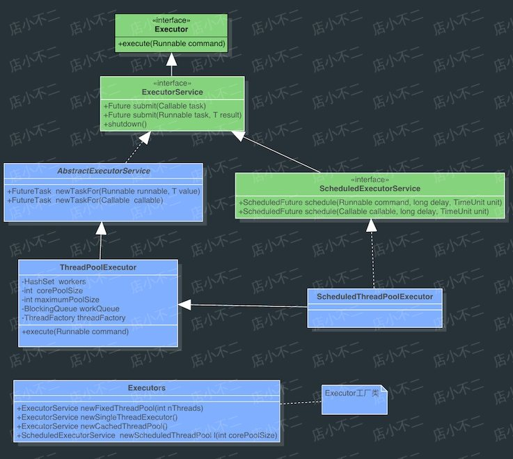

上文我们介绍了JDK中的线程池框架Executor。我们知道，只要需要创建线程的情况下，即使是在单线程模式下，我们也要尽量使用Executor。即：
ExecutorService fixedThreadPool = Executors.newFixedThreadPool(1);
//此处不该利用Executors工具类来初始化线程池但是，在《阿里巴巴Java开发手册》中有一条
【强制】线程池不允许使用 Executors 去创建，而是通过 ThreadPoolExecutor 的方式，这样的处理方式让写的同学更加明确线程池的运行规则，规避资源耗尽的风险。
Executors 返回的线程池对象的弊端如下:
FixedThreadPool 和 SingleThreadPool : 允许的请求队列长度为 Integer.MAX_VALUE，可能会堆积大量的请求，从而导致 OOM。
CachedThreadPool 和 ScheduledThreadPool : 允许的创建线程数量为 Integer.MAX_VALUE，可能会创建大量的线程，从而导致 OOM。
可以看到，这是一个强制性的规则，并且是不允许使用Executors来创建，建议使用ThreadPoolExecutor来创建线程池，那我们先来回顾一下Executors和ThreadPoolExecutor。

我们可以看到ThreadPoolExecutor已经是Executor的具体实现了，而且具有较多可配参数（可配参数见下方，可仅了解，用到时再进行详细查询）。Executors是一个创建线程池的工具类，查看其源码的话也会发现这几种创建线程池的方法也都是通过调用ThreadPoolExecutor来实现的。
ThreadPoolExecutor一共有四个构造函数，七个可配参数，分别是
- corePoolSize: 线程池中保持存活线程的数量。
- maximumPoolSize: 线程池中允许线程数量的最大值
- keepAliveTime: 表示线程没有任务执行时最多保持多久时间会终止
- unit: 参数keepAliveTime的时间单位
- workQueue: 一个阻塞队列，用来存储等待执行的任务
- threadFactory: 线程工厂，主要用来创建线程
- handler：表示当拒绝处理任务时的策略
那么Executors到底会导致什么问题，才会让开发手册中直接被定义为不允许了呢。首先就是一个血淋淋的教训，直接导致线上服务不可用，已经可以算是事故了。
我们也可以现在我们本地进行一下小实验：
public class ExecutorsTesting {
private static ExecutorService executor = Executors.newFixedThreadPool(15);
public static void main(String[] args) {
for (int i = 0; i < Integer.MAX_VALUE; i++) {
executor.execute(new SubThread());
}
}
}
class SubThread implements Runnable {
@Override
public void run() {
try {
Thread.sleep(10000);
} catch (InterruptedException e) {
//do nothing
}
}
}运行时指定JVM参数：-Xmx8m -Xms8m，大概几秒钟之后，会报出OOM错误：
Exception in thread "main" java.lang.OutOfMemoryError: GC overhead limit exceeded
at com.kaikeba.mybatis.ExecutorsTesting.main(ExecutorsTesting.java:10)
//报错行数为上述代码中的executor.execute(new SubThread());那么为什么会报出这个错误呢。
我们先来看一下Executors中的FixedThreadPool是如何构造的。
public static ExecutorService newFixedThreadPool(int nThreads) {
return new ThreadPoolExecutor(nThreads, nThreads,
0L, TimeUnit.MILLISECONDS,
new LinkedBlockingQueue<Runnable>());
}可以看到对于存储等待执行的任务，FixedThreadPool是通过LinkedBlockingQueue来实现的。而我们知道LinkedBlockingQueue是一个链表实现的阻塞队列，而如果不设置其容量的话，将会是一个无边界的阻塞队列，最大长度为Integer.MAX_VALUE。由于Executors中并未设置容量，所以应用可以不断向队列中添加任务，导致OOM错误。
上面提到的问题主要体现在newFixedThreadPool和newSingleThreadExecutor两个工厂方法上，并不是说newCachedThreadPool和newScheduledThreadPool这两个方法就安全了，这两种方式创建的最大线程数可能是Integer.MAX_VALUE，而创建这么多线程，必然就有可能导致OOM。
如何该利用ThreadPoolExecutor来创建线程池呢？
我们其实可以看到Executors中的newFixedThreadPool其实也是调用ThreadPoolExecutor来实现的。正如手册中所说，当我们不用Executors默认创建线程池的方法，而直接自己手动去调用ThreadPoolExecutor，可以让写的同学更加明确线程池的运行规则，规避资源耗尽的风险。比如我们在Executors.newFixedThreadPool基础上给LinkedBlockingQueue加一个容量，当队列已经满了，而仍需要添加新的请求会抛出相应异常，我们可以根据异常做相应处理。
public static ExecutorService newFixedThreadPool(int nThreads) {
return new ThreadPoolExecutor(nThreads, nThreads,
0L, TimeUnit.MILLISECONDS,
new LinkedBlockingQueue<Runnable>(10)); //添加容量大小
}除了自己定义ThreadPoolExecutor外。还可以利用其它开源类库，如apache和guava等，可以有更多个性化配置。
参考文章：
https://www.hollischuang.com/archives/2888
https://stackoverflow.com/questions/1094867/when-should-we-use-javas-thread-over-executor#answer-34373289
https://blog.51cto.com/zero01/2306857
本文由博客一文多发平台 OpenWrite 发布！
文章首发：https://zhuanlan.zhihu.com/lovebell
个人公众号：技术Go
您的点赞与支持是作者持续更新的最大动力！